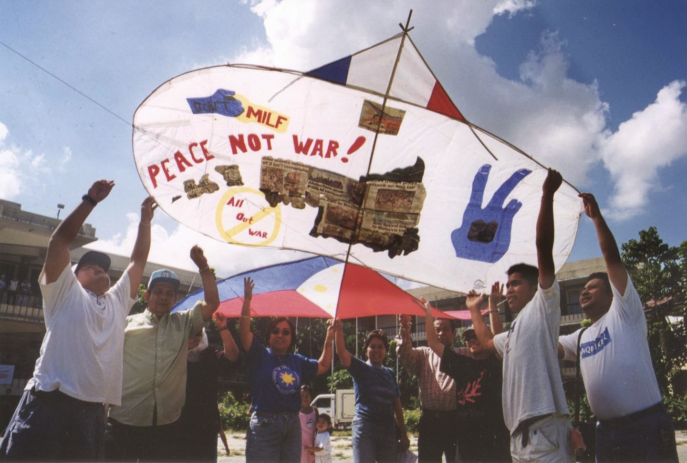

is the Suban-on’s version of the Sinulog of Cebu. This is a weeklong fiesta every October 2nd week. Street dancing featuring tribal dance is presented as a tribute to Oroquieta City’s patron saint, Our Lady of the Holy Rosary.

Tabanog Festival
held every summer time, this is a kite-flying festival where every legal residents of the town are invited to participate.